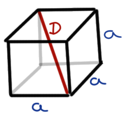
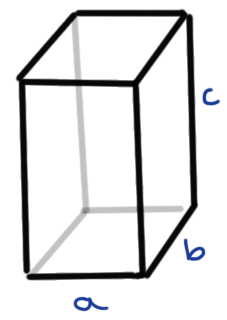
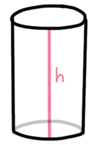
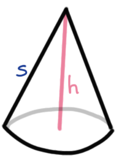
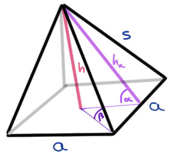

5 Volumenberechung
Version vom März 14, 2023 um 11:32:29
In diesem Abschnitt wollen wir einmal das Volumen \(V\), sowie die Oberfläche \(O\) und die Grundfläche \(G\) von verschiedenen geometrischen Objekten berechnen. Wie so oft musst du dir überlegen, was bei deinem Objekt jetzt die Grundfläche ist. Aber das ist dann meist im konkreten Fall sehr klar.
5.1 Würfel
Im Folgenden sehen wir einmal einen Würfel abgebildet.

Das Volumen \(V\) eines Würfels berechnet sich dann wie folgt.
\[ V = a^3 \]
Die Oberfläche \(O\) eines Würfels wird dann wie folgt bestimmt.
\[ O = 6 \cdot a^2 \]
Die Grundfläche \(G\) berechnet sich dann nach der folgenden Formel.
\[ G = a^2 \]
Wenn wir an der Diagonalen \(D\) interessiert sind, nutzen wir dann folgende Formel.
\[ D = a\sqrt{3} \]
5.2 Kugel
Das Volumen \(V\) einer Kugel berechnet sich dann wie folgt.
\[ V = \cfrac{4}{3}\cdot \pi \cdot r^3 \]
Die Oberfläche \(O\) einer Kugel wird dann wie folgt bestimmt.
\[ O = 4 \cdot \pi \cdot r^2 \]
Der Umfang \(U\) ergibt sich dann durch folgende Formel
\[ U = 2 \cdot \pi \cdot r \]
5.3 Rechteckige Säule
Die rechteckige Säule entspricht dem Quadrat als Grundfläche. Meistens nutzen wir die Säule für die Berechnung von Luftvolumen. Wenn wir an dem Volumen eines Raumes interssiert sind, dann bietet sich die rechteckige Säule an.

Das Volumen \(V\) einer rechteckigen Säule berechnet sich dann wie folgt.
\[ V = G \cdot h = a \cdot b \cdot c \]
Die Oberfläche \(O\) einer rechteckigen Säule wird dann wie folgt bestimmt.
\[ O = 2ab + 2ac + 2bc \]
Die Grundfläche \(G\) berechnet sich dann nach der folgenden Formel.
\[ G = a \cdot b = \cfrac{V}{h} \]
5.4 Zylinder
Der Zylinder bietet sich an für die Berechnung von Inhalten, da meistens dann die Töpfe oder die Silos einem Zylinder folgen. Wir haben also Töpfe als ganz kleine Zylinder oder eben Silos als riesige Zylinder.

Beachte auch folgenden Zusammenhang für den Zylinder:
\[ r = \sqrt{\cfrac{V}{\pi \cdot h}} \]
Das Volumen \(V\) eines Zylinders berechnet sich dann wie folgt.
\[ V = G \cdot h = r^2 \cdot \pi \cdot h \]
Die Oberfläche \(O\) eines Zylinders wird dann wie folgt bestimmt.
\[ O = 2 \cdot G + 2r \cdot \pi \cdot h \]
Die Grundfläche \(G\) berechnet sich dann nach der folgenden Formel.
\[ G = r^2 \cdot \pi \]
Die Höhe \(h\) des Zylinders können wir dann wie folgt bestimmen.
\[ h = \cfrac{V}{G} = \cfrac{V}{r^2 \cdot \pi} \]
5.5 Kegel
Der Kegel ist ein Kreis mit einem Hut auf und kann deshalb eventuell für die Berechnungen von Volumen unter einem Netz genutzt werden. In der Praxis ist die Anwendung eher von spezieller Natur.

Beachte auch folgenden Zusammenhang für den Kegel:
\[ r = \sqrt{\cfrac{3V}{\pi \cdot h}} \]
\[ h = \sqrt{s^2 - r^2} \]
\[ s = \sqrt{r^2 + h^2} \]
Das Volumen \(V\) eines Kegels berechnet sich dann wie folgt.
\[ V = \cfrac{1}{3} \cdot h \cdot r^2 \cdot \pi \]
Die Oberfläche \(O\) eines Kegels wird dann wie folgt bestimmt.
\[ O = r^2 \cdot \pi \cdot s \]
Die Grundfläche \(G\) berechnet sich dann nach der folgenden Formel.
\[ G = r^2 \cdot \pi \]
5.6 Pyramide
Die Pyramide ist im Prinzip ein Kegel auf einer quadratischen Grundfläche. So häufig nutzen wir die Pyramide nicht in der praktischen Anwendung, aber wir können an der Pyramide gut rumrechnen und uns nochmal mit den Winkelsätzen beschäftigen.

Das Volumen \(V\) einer Pyramide berechnet sich dann wie folgt.
\[ V = \cfrac{1}{3} \cdot h \cdot a^2 \]
Die Mantelfläche \(M\) einer Pyramide errechnet sich dann folgendermaßen.
\[ M = 2 \cdot a \cdot h_a \]
Die Oberfläche \(O\) einer Pyramide wird dann wie folgt bestimmt.
\[ O = a^2 + 2 \cdot a \cdot h_a \]
Die Grundfläche \(G\) berechnet sich dann nach der folgenden Formel.
\[ G = a^2 \]
Die Höhe \(h\) einer Pyramide lässt sich wie folgt berechnen.
\[ h = \sqrt{h_a^2 \cdot \left(\cfrac{a}{2}\right)^2} \]
Oder aber über die Neigung der Seitenfläche \(\alpha\) durch Umstellung der Formel nach \(h\).
\[ \alpha = \arctan\left(\cfrac{h}{a/2}\right) \]
\[ \tan(\alpha) = \cfrac{h}{a/2} \]
\[ h = \tan(\alpha) \cdot a/2 \]
Die Diagonale durch die Mitte der Grundfläche können wir wie folgt berechnen.
\[ d = \sqrt{a^2 + a^2} = \sqrt{2} \cdot a \]
Dann ergibt sich der Winkel \(\beta\) am der Seitenspitze der Pyramide wie folgt.
\[ \beta = \arctan\left(\cfrac{h}{d/2}\right) \]